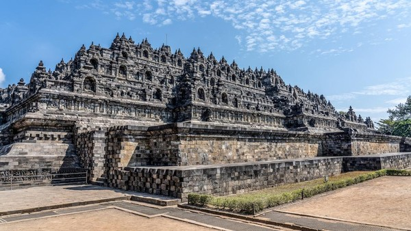

List Kerajaan Buddhis

Kerajaan Majapahit (1293–1527)
Kerajaan Majapahit dikenal sebagai salah satu kerajaan terbesar di Nusantara yang mencapai puncak kejayaan pada masa pemerintahan Hayam Wuruk dan Gajah Mada.
Detail
Kerajaan Sriwijaya (abad ke-7 – 13)
Kerajaan maritim besar di Sumatra yang menguasai jalur perdagangan Asia Tenggara dan menjadi pusat penyebaran agama Buddha di Nusantara.
DetailKerajaan Tarumanegara (abad ke-4 – 7)
Salah satu kerajaan tertua di Jawa Barat yang terkenal dengan prasasti-prasasti beraksara Pallawa dan peninggalan Sungai Gomati.
Detail